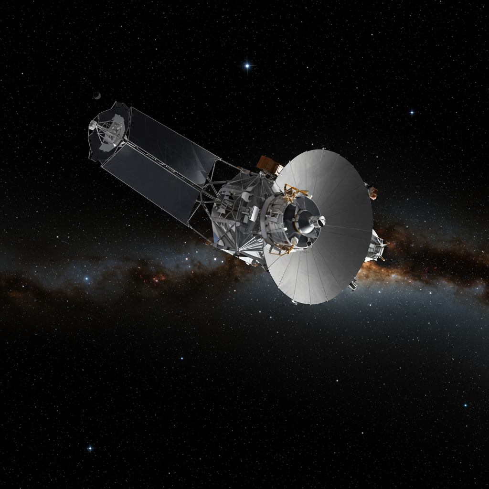

Euclid
Agencia: ESA
Fecha de lanzamiento: 1 de julio de 2023
Duración de misión: Planeada para 6 años (activo)
Tipo de misión: Telescopio espacial de cartografía cosmológica
Objetivo: Mapear la geometría del universo, estudiar la energía y materia oscura mediante lentes gravitacionales y distribución galáctica
Carga científica: Telescopio de 1.2 m, cámaras ópticas y de infrarrojo cercano, espectrómetro de infrarrojo cercano
Significado del nombre
Nombrado en honor a Euclides de Alejandría, matemático griego considerado el padre de la geometría. El telescopio se llama así porque su misión es trazar con extrema precisión la estructura y forma del cosmos, como Euclides sistematizó el espacio y la geometría.
Impacto histórico
Euclid es la misión más avanzada para estudiar la energía oscura y la materia oscura, elementos que constituyen alrededor del 95% del universo pero cuya naturaleza sigue siendo un misterio. Mediante lentes gravitacionales débiles y mapeo de más de mil millones de galaxias, busca reconstruir la expansión cósmica y la estructura a gran escala con precisión sin precedentes.
Sus primeros datos ya están afinando modelos cosmológicos y ayudando a entender cómo la energía oscura influye en la aceleración de la expansión del universo. Es un pilar esencial para la cosmología del siglo XXI.
Estado actual
Activo, en su fase de operaciones científicas desde fines de 2023. Envía datos regularmente a la ESA, con mapeo y calibraciones en curso. Se espera que complete su misión hacia finales de la década de 2020.